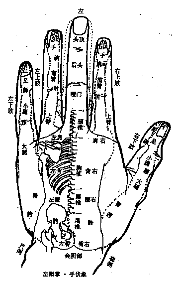
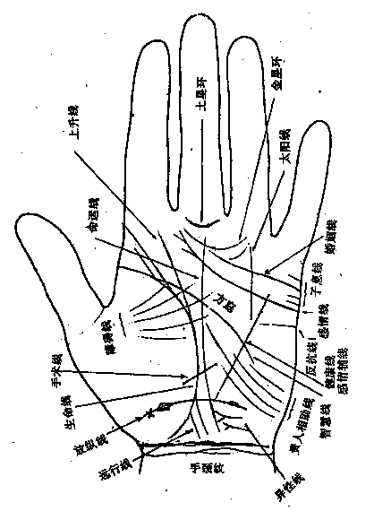

|
――康节神数与手相学之三
金星海 传授 王金生 整理
何为全息手相学?
先来说全息，全息hologram即是古人讲的“天人合一”the combination of the heaven and people。天指整体，人指局部，也就是局部、整体互为全息。全息手相学，就是运用全息思维方法，研究从手这一局部提取整体信息的学问。此之整体是分层分级的，大致可分人身、人生、社会、天文四个等级，也就是从手象可提取人身、人生、社会、天文的全息信息。
金先生“全息手相学”能一举突破古今学术的局限，识破天机为我用，主要得力、归功于以下学习研究原则和要旨，深刻领悟、切实掌握并实践应用这些原则和要旨，您就能速证菩提，臻达即一即异、一通百通的奇妙境地。
一 遵循从整体到局部的观察研究顺序
很多人都在讲全息，讲天人合一，但很少人识得个中三昧．除局部、整体互为全息外，“天人合一”的进一层次要义是：
整体决定局部，局部反映整体。
天与人，局部与整体绝不完全对等，决定和反映，显示了二者的辩证关系。不明二者的辩证关系，就很容易陷进学术的误区而不自知。
正如钱学森在《一个科学新领域――开放的复杂巨系统及其方法论》【1】中所指出的那样：
另外，也有的人一下子把复杂巨系统的问题上升到哲学高度，空谈系统运动是由子系统决定的，微现决定宏观等等。一个很典型的例子就是“宇宙全息统一论”。他们没有看到人对子系统也不能认为完全认识了。子系统内部还有更深更细的子系统，以不全知去论不知，于事何补?甚至错误地提出“部分包含着整体的全部信息”，“部分即整体，整体即部分，二者绝对同一”，这完全是违反客观事实的，也违反了马克思主义哲学。
钱老一针见血地指出了“微观决定宏观，局部决定整体”之谬，然而，这种错谬在数术界比比皆是。比如种种宣扬改变局部(姓名、阴宅、阳宅、衣色、挂镜……)可以改变整体人生，正是基于钱老所批评的“微观决定宏观，局部决定整体”。
在探讨全息手相学时，首先要洞明全息真义，然后才有可能在实践中正确应用。在实践中，任何时候都要遵循从整体到局部的观察研究顺序，比如在考察手象与人身全息时，人身是整体(天)，手象是局部(人)，人身信息决定了手象信息，手象信息反映了人身信息。同时，手象亦是一个整体，可分多层次之局部，如双手、单手、手指、节等，换言之，双手、单手、手指、指节等皆可视为全息缩小的人身进行研究，但正确的观察研究顺序必从双手全息开始，这正是绝大多数研究者所未认识到的。
《掌纹诊病实用图谱》是最具科学性的参考书，书中图42《韶华子左手阳掌手伏象生命密码定位图》如下：

中指middle finger为头，以食指forefinger为右上肢，拇指thumb为右下肢，无名指ring finger为左上肢，小指little finger为左下肢，也就是以掌心the centre of the palm向前，手指finger朝上为同方向的“小我”。这种单手对应存在明显缺陷，因人身左右手、左右足对称，而小指与拇指并不对称。正确的应该是双手组合为一个同方向的“小我”，以双手小指为左右足，此为一级全息，而研究单手全息应以双手全息为基础、前提。同理，三级全息即手指全息，应以二级全息即单手全息为前提，否则，就很容易陷入学术的迷雾。不从双手全息入手，对事物的理解就会和实际发生偏差。
二 获得理性认识是学习进步的标志
作者考察古今中外手相著作，大都是某种手象表征某种意象的著作方式，或洋洋大观，天下文章一大抄，至于为何某种手象表征某种意象则语之不详。对读者来说，
其一，很难背下这么多意象；
其二，不知意象之原理，很难考证其学术真伪或深化发展；
其三，即使全背下也远不够应付干变万化的实际。
为什么出现这种现象呢?传授者不把金针度与人抑或本无“金针”无以与人？大概是由于后者吧。易经《蒙》卦的意义实该让后人牢记：“建筑各种知识之间的桥梁，乃启蒙教育之本。然而许多为人之师者，却不把‘搭桥’作为教育之本、启蒙之旨，他们只传授知识而不传授探求知识的方法，实在害人非浅。”【2】
我们在进行手相学习时，以明白原理为第一要务，为衡量学习进步的标志。一些流于表象的著作，或深究其即一即异之根源，如不能，则不必在上面花费较多工夫。
比如在人身全息层面，双手、单手、每一手指乃至指节如何全息缩影着“大我”?明此，手象诊病就可无师自通，且比流行图谱准确、深刻。如不从此着手而“兼收并蓄”，把互为矛盾的图谱都背记下来，苦不堪言不说，实际如何运用?
在人生全息层面：
第一，明白手象要素(如指、纹)的五行、干支所属；
第二，分配六亲十神。
关于第一点，我们在本文系列《之一》中已点破。我们认为，如不能把手相实践上升为这些理性认识，即使你偶有奇中，亦无多大价值。
在社会全息层面：不同国家、社会、民族、地区之手相有其特征，同一国家、社会、民族或地区的手相有其共性。明其特征、共性及其义蕴，就可从手相知宏观信息。
天文全息层面：手象要素对应于天象要素，两者互为印证。但要注意，古人依目测确定金、木、水、火、土五行星，其真实五行不一定名实相符。古人受时代的限制，只能观测到以上五大行星，想当然地以为一一对应于五行，现代科学的发展，使人们看到了更广袤的天空，故古人对于五星、五行的定位与对应多有错谬。比如水星，其真实五行并非就是水。全息易学运用全息思维，成功破译了太阳系内主要星球与数术要素的精确对应，为古传数术在现代应用奠定了基础。有关论文将陆续在“宇宙之子金星海”http://yzzz.126.com刊出。
三 多学科协同研究是取得突破的前提
全息的一种扩展是一切学科互为全息，包括各式数术(相学、四柱、八卦、奇门、斗数、堪舆……)互为全息；数术与其他学科互为全息。广义讲，一切学科皆是数术学，只不过“百姓日用而不知”罢了。
正因为一切学科互为全息，所以，从深层次上讲，只有通达一切学科才能真正通达某一学科，此即是“即异其一”。对科学意义上的数术探研而言，多学科协同研究是显得如此重要。北京科学技术出版社出版，王大有先生著的《图谱》即是本条原则的例证。我们的实践验证亦是如此。若是听闻某人手相造诣很高，却于其他数术，于现代科学知之甚少，这种消息的真实性是极小的。
《手象要素与干支系统》(之一)留了几个问题：
（一）
“我”在哪里?哪一指或哪一主纹?
（二） 四柱学中之“我”因人而异，可木，可火，可土，可金，可水，手相学中之“我”是固定某一五行，还是游移不定？
（三）
手相学之六亲可否沿用四柱之六亲法则，诸如财为妻，官为夫等? 如此，还可验证四柱运算六亲法则之正确性。
在此可以肯定地告诉读者，手相与四柱之理是相通的，相通在两者都升华、上升到金字塔尖。而且其理可应用于全新理念的现代式堪舆中去，不过堪舆涉及干支(八卦)方位的正确排布，不平衡干支排布模式不适合平衡的事物。参见《理论八卦方位与实用八卦方位》
我们在《补肾妙方话“核”字――文字全息信息提取实例解剖(二)》中讲到，“真正的数术学必然可以用来破解语言密码和文化密码”。手相学就与语言学相通，两者有相通的数术全息密码。《图谱》中图13《常规掌纹密码名称总图(三大主线十四辅线总图)》如下：

以“Y”纹为异性线，从构形全息看，为阴阳合一之意蕴，阳为男、阴为女，其符之人生涵义不言而喻。在用数术学解剖English(英语)中，“Y”字母有同样的全息含义。如
happy adj.快乐的,
幸福的, 陶醉于...的, 恰当的(快乐的、幸福的)。
ha为have(进行)的缩略，y为阴阳合一，故为快乐的、幸福的。
gay adj.欢迎的,
<美俚>同性恋的, 放荡的, 快乐的n.<美俚>同性恋者,尤指男性同性者为快乐的、放荡的。
g为go(去)的缩略，a为一，y为阴阳合一。
joy n.欢乐,喜悦,快乐, 乐事,乐趣v.高兴
jo为joinvi.参加,结合,加入vt.接,结合,参加,加入n.连接,结合,接合点的缩略，jo＋y即参加“阴阳结合”，岂能不欢乐,喜悦,快乐。
还有很多词汇，如gaiety――n.欢乐的精神,
欢乐的气氛pl.作乐,乐事。
perfectly――adj.极佳地,
完美的adv.很,完全,完美地。
victory――n.胜利,战胜, 克服,
[罗神]胜利女神……只要掌握了康节神数即一即异的法则，用数术的方法破译English是很简单的事，拟专著详述，不读该书，学者万难破译康节神数。
语言中沉淀着宇宙信息，发展、提高之后的中华数术可以较好解剖、还原这些信息。
四
解放思想才能避免与真理失之交臂
在科学易事业中，在应用易学的发展中最大的阻力、障碍是我们自己，而不是源于外部。最难做到的就是解放思想，实事求是。人类科技进步越来越快，如美国经济学家、社会心理学家沃伦・本尼斯认为“只有夸大其词倒反近于真实”。据统计，人类科学知识增长一倍所需的时间，在19世纪是50年；到20世纪中叶是10年；目前仅需3～5年。然而，应用易学的发展却明显与整体人类科技之进步脱节，甚至是倒退――墨守成规，停步不前就是退步。然而易学界不但未认识到此点并引起警惕，反而有一种虚骄之气。
江泽民同志指出，“创新是一个民族进步的灵魂，是一个国家兴旺发达的不竭动力。”【3】创新亦是易学进步之魂，是易学事业兴旺发达的不竭动力。然而，不解放思想，实事求是，创新就会受到人们的责难甚至刁难。没有人承认自己不追求真理，但实际表现出来的却往往是保守。此关系到易学事业的生死存亡，望引起足够重视!
在数术研习中，必须做到不唯古，不唯上，不唯书，只唯实。维护古易尊严，尊重古今圣贤是可取的，然而，突破古易窠臼，提升先贤学术才是古易传人，才是真正的维护古易尊严，尊重古今圣贤!
在数术争鸣中，有人擅长考据，深入挖掘出某古人的观点以证明今人创新之谬，其逻辑方式就错了。正如庞钰龙先生在“21世纪应用易学研讨会”上的书面发言《21世纪应用易学向何处去？》中谈到应用易学时指出：
“我们强调‘应用’，就是把自己同那些为理论而理论的纯粹的考古、求证者，从本质上区别开来。我们称之为的‘应用易学’，就是立足于现代人类社会需要，可以为社会各个领域直接或间接解决认知问题的一种方法论。”
如手相学术中，将八卦比附于手掌，这种比附并不成功，因为手是人体之缩影，而人体是对称、均衡形，后天八卦呈不对称、不均衡，古人限于历史条件，对八卦的认识有许多待我们补充、深化、提高。又如手相学如何安排十神、六亲，正确的应用必须破除现流传四柱学术中的一些错误。如果先验地把四柱中的六亲法则绝对化，就永远不可能把手相学上升为科学、严密的干支运算模式。一式一解层面上的数术实践证明，现行四柱六亲法则错谬多多。
五
殊途同归的全息思维之旅
全息手相学的探讨，不仅是技法正宗的追寻，更看成是悟“道”的全息思维之旅。在入口处有两条路：
一为实际全息，即将各级数术要素理解为小我，与大我全息对应，以《图谱》为代表作。
二为数术全息，即将手象要素对应于数术要素，从而将千百年实践经验积累之数术学全面移植入手相学，有可能使手相学术产生质的革命性飞跃。
前者为直接全息，直趋本质，只要掌握全息思维方法，有无数术基础，有无高价教材等皆不重要。不过《图谱》是王大有先生的全息思维成果，有了它，就可以走捷径。
后者为间接全息，因为间接，自然夹杂着大量无用信息，流传数术学中，既有科学成分，亦有不为人知的误区。因此，若不能把数术学上升为统一规律的高度，这种移植只是浅探，而难以深化。然而，这种移植若是成功，将把实际全息的感性、现象成分上升为理性、本质层面，建立科学、严密、可复验、易学习的数术学体系。在本专题的探讨中，我们则是将两条全息思路结合，二者相辅相成，异曲同工。
参考文献：
【1】《论地理科学》，浙江教育出版社1994、9，原载《自然杂志》13卷1期，1990。
【2】《易经六十四卦直解・蒙》，庞钰龙。
【3】《光明日报》1998年3月5日。
――原刊于《易数之友》2000综合版3、4期
原作于2000年5月12日
2001年3月15日20:01
本文扫描录入:
宇宙之子金星海 http://yzzz.126.com
----------------------------------------------------------------
宇宙之子金星海
版权所有 转载时请注明作(译)者及出处
|